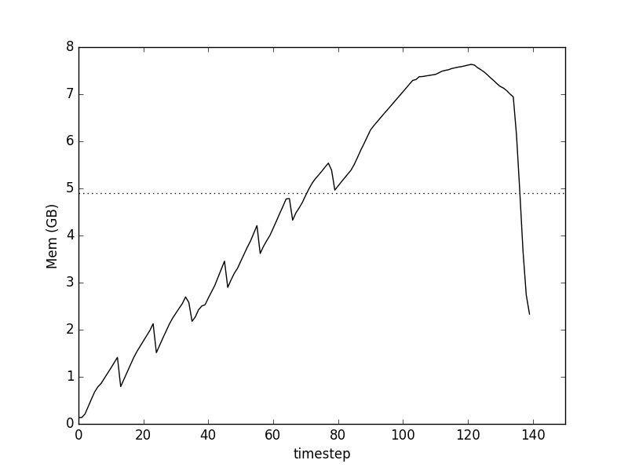
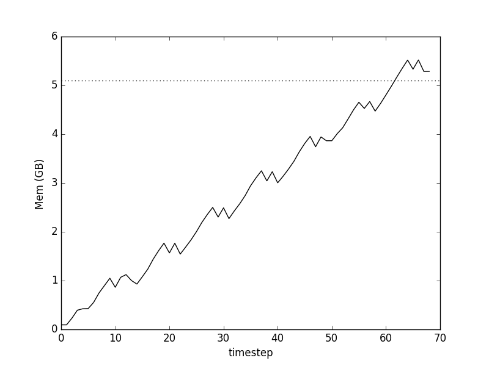
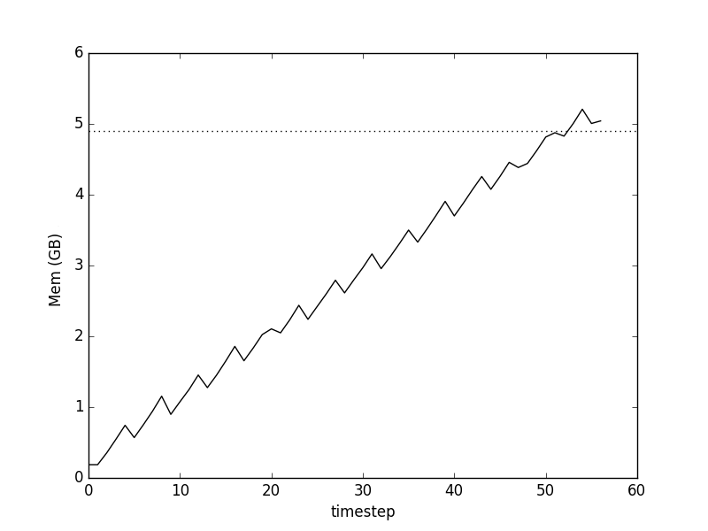

I have been working on fastparquet since mid-October: a library to efficiently read and save pandas dataframes in the portable, standard format, Parquet.
As of the new year, the functionality is largely complete, including reading and writing to directory-partitioned files on remote file-systems. As the name suggests, one of the main purposes of fastparquet was to have higher performance than the legacy parquet-python. This was done with a combination of Numpy- and Numba-accelerated methods. Monitoring indicated that at this stage, disk read times were becoming a significant fraction of total read times, so something was going right.
Having dealt with some of the bottlenecks, some things become important that the casual user rarely thinks about. The rest of this article is about eliminating in-memory duplication of data, which both takes time to do, and can explode memory use for big data-sets, filling up all usable RAM.
In December, performance tests were undertaken by the datashader team with the US census dataset, 300M+ rows, each containing latitude, longitude and a race category. The size of the data in memory as a pandas dataframe is about 5GB, if the race column is coded as a categorical. Having converted to parquet, the read time was somewhat slow compared to feather and bcolz formats. Profiling (e.g., with snakeviz) indicated that the majority of the time was spent within the pandas library.
Profiling memory showed something surprising

where
We find two main effects:
What's going on here?
Each row group was being loaded as follows:
pd.DataFrame({col1: arr1, ...})and finally create output dataframe from the set of row-groups: pd.concat(iterable_of_row-groups). (An earlier version has a list of row-groups, this makes no difference, as concat loads the whole thing anyway).
It runs out that Pandas never forms dataframes by reference, but always copies all data into new internal numpy arrays. Thus each row-group's worth was being copied when creating the intermediate dataframes, and everything was being duplicated again when creating the final output. Pandas does not provide a way to pre-assign memory so that you can assign directly to it as you might do with numpy arrays (numpy.empty).
The module here assigns an empty dataframe with given types, and returns both a reference to the dataframe and references to the numpy arrays of each column (as a dictionary), so that they can be directly assigned to. Note the subtlety concerning categorical type: the associated array time will be integer, but the size of that integer depends on the number of labels we expect; furthermore, categorical arrays also need to surface the array associated with the labels, so that those can be filled in at write time.
With this pre-assignment, the code had to be changed substantially, so that the dataframe was created up-front, and then the appropriate numpy array section passed to each invocation of the column reader. At this point, only code above the column reader level had been changed, and the change within the column reader amounted to
return out
->
assign[:] = out
(with special treatment for categoricals, which also had to assign the category labels).
Memory use after Pandas preallocation, note the greatly reduced execution time 
Hurray! The peak of our curve is now only slightly above the level required for data itself (dotted line), and the large bump in the first plot, associated with concatenating data-frames, is gone, saving us time.
Some further tinkering produced added small improvements.
out = pf.to_pandas(categories={'race': 6})
assign[:] = statement into a few ones, which only affects columns containing NULLs.Memory use with reduced looping and category number mapping: 
The smaller-scale saw-tooth pattern indicates that there is still some data duplication and assign/forget of array space going on, but clearly much better than before.
The data pipeline is now as follows:
For the census data (no nulls, no conversions, no compression), this all amounts to one extra copy: the buffer of the pre-allocated array could have been filled using the standard file's readinto method; but given that we want to allow usage of other file-like objects such as S3Files, the copy may be unavoidable.
For arbitrary data, there are many possible paths through the steps above, not to mention that some data conversions can be done in-place and others cannot.